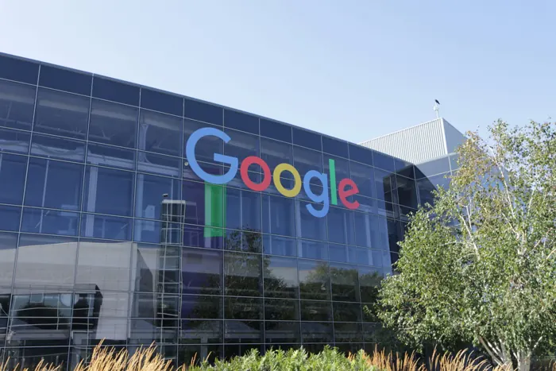
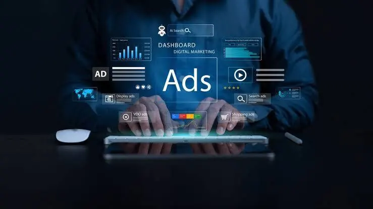
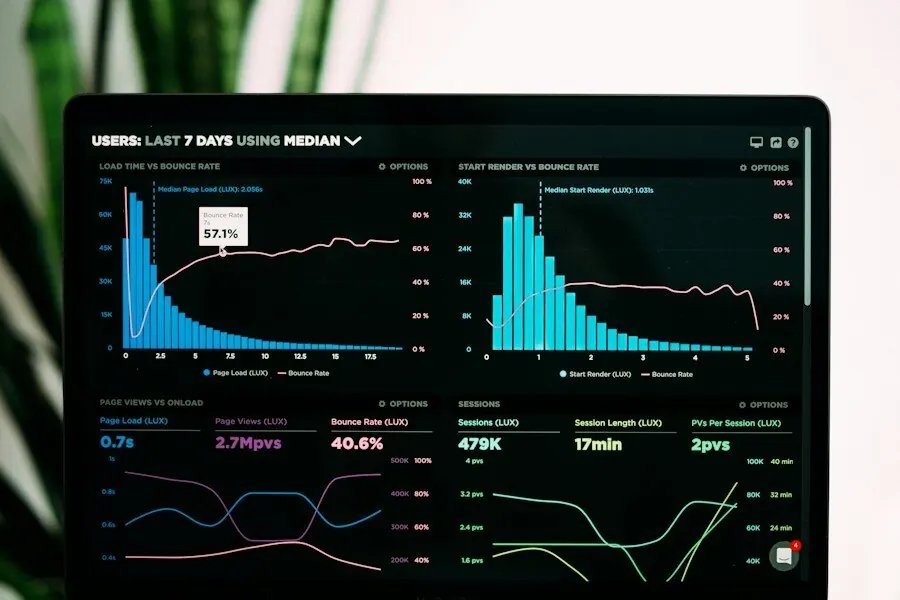

Tous nos articles
Actualité SEO et IA de fin octobre 2026, ce que les entreprises doivent retenir
Contrôle commun de l'entraînement des IA, plainte des éditeurs contre les Aperçus IA, ChatGPT Ads qui modifie vos annonces par défaut.

Être recommandé par ChatGPT quand un acheteur cherche un fournisseur industriel

Référencement d’un fabricant industriel, la méthode pour générer des demandes de devis
Faille PHP2Shell, protéger la sécurité et le référencement de votre site

Comment suivre sa visibilité dans les aperçus IA de Google
Microsoft-Decision-1, ce que le nouveau modèle de Microsoft change pour Bing et Copilot
Suivre les leads d’un cycle de vente long avec GA4 et GTM

AI Max, Performance Max, AI Mode, ce que l’IA change vraiment dans Google Ads

Comment faire un audit SEO technique en 12 étapes
Aucun article ne correspond à votre recherche.
Savez-vous si l'IA cite votre entreprise ?
Nous analysons votre présence dans les Aperçus IA de Google et les autres assistants IA, puis nous identifions les pages à retravailler en priorité pour être retenu dans leurs réponses.